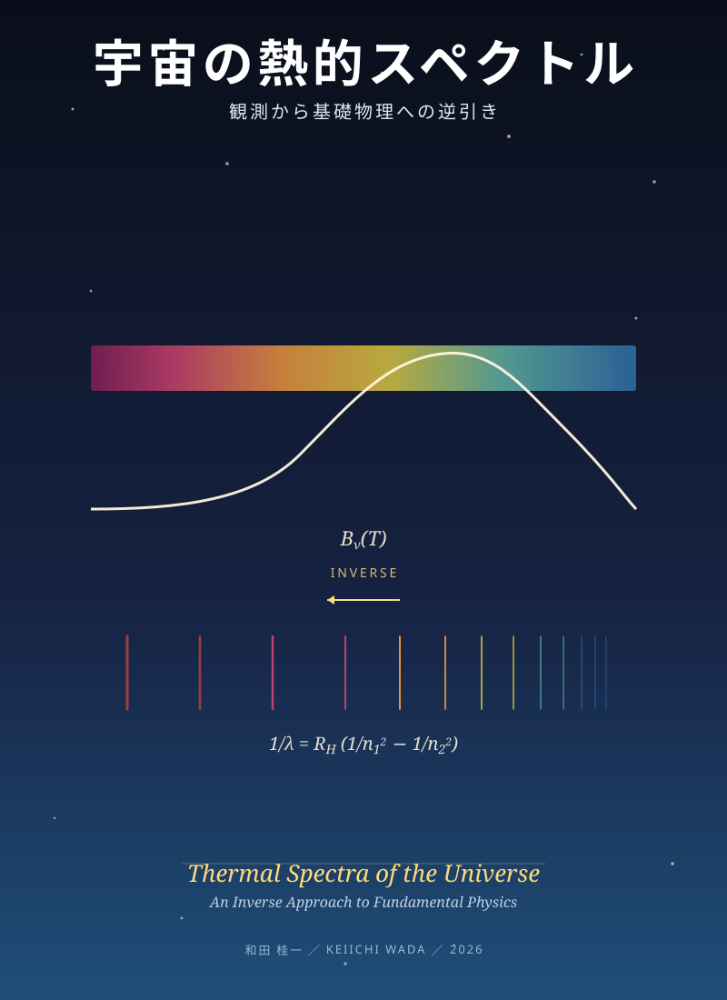

宇宙の熱的放射
連続放射と線スペクトルの背景物理
![]()
版履歴

本書はドラフト段階にあり、レビュアーからのフィードバックを反映しながら継続的に改訂中です。
| 版 | 公開日 | 主な変更 | 引用 |
|---|---|---|---|
| 次版（作業中） | 2026 秋目標 | 図版充実（v0.2 ターゲット 7/8 枚反映済）、用語統一、序文刷新、フォント刷新 等 | — |
| v0.1 | 2026-06-11 | 初版 preprint ― 全 8 部 25 章 + 付録、CC BY 4.0 | DOI 10.5281/zenodo.20635563 |
詳細な改訂内容は CHANGELOG.md と GitHub Releases。
オンライン版（GitHub Pages）は main ブランチへの push のたびに自動更新されるため、本ページの内容は 常に最新の作業中ドラフト です。「固定版を引用したい」場合は上記表の DOI（特定の版）を使用してください。
はじめに ― この本の三つの原則
英題（参考）：Thermal Radiation in the Universe: An Inverse Approach to the Physics
本書は、宇宙物理の中心的観測対象である 連続スペクトル（黒体放射） と 線スペクトル を入口に、基礎物理を逆向きに学び直すための教科書である。次の三つの原則を貫く。
本書の射程について：書名の「熱的スペクトル」は、本書が 熱的連続放射（プランク分布とそこからのずれ）と熱的線スペクトル（LTE 近似が成り立つ条件下の線形成）を主軸とする ことを示す。これは「逆引きの出発点」を限定することで、現代物理学の主要分野を一筆書きでつなぐ本書の方法論を可能にしている。
ただし読者の見通しのために、対比的な比較対象 として次のものも扱う：
- 線スペクトル（第VII部）：原子物理・線形・観測応用（連続側と並行する逆引き）
- 非熱的放射（第15章 §15.6、第18章）：シンクロトロン・逆コンプトン散乱の存在と熱的との区別法
- non-LTE 線形成（第20章 §20.5）：物質側統計の Boltzmann/Saha 分布からの逸脱
- 21 cm 線・AGN 線（第19・23章）：低密度・非平衡環境での熱的線形成の極限
- QED の見通し（第VIII部）：連続と線を統一する電磁場–物質相互作用 Hamiltonian
これらは 主軸ではないが、主軸の射程と限界を明確にするために 並走する。本格的な非熱的天体物理（高エネルギー宇宙線、GRB、AGN ジェット）は Rybicki & Lightman、Longair 等の専門書を併読してほしい
原則 1 ― 逆引き
観測されるスペクトルという完成形から、その背後にある物理（放射輸送・統計力学・量子力学・電磁気学・原子物理・QED）を逆向きにたどる。
原則 2 ― 背景物理を曖昧にしない
各観測量の背後にどの物理が、どんな前提のもとで効いているかを、章を横断して明示する。ブラックボックス化や「ここでは扱わない」を避ける。
原則 3 ― 天下り的に式を与えない
プランク分布、リュードベリ公式、振動子強度、Voigt 線形などを結果として与えるのではなく、観測から逆向きに辿って 必然性 として理解できるようにする。
本書の二つの中心地図
本書は二つの「中心地図」を持つ。各部の冒頭でこの地図を再掲し、強調する因子を切り替えながら、章群がどの物理を担っているかを明示する。
連続：プランク関数
プランク関数（連続スペクトルの地図）
B_\nu(T) = \frac{2 h \nu^3}{c^2} \cdot \frac{1}{e^{h\nu/kT} - 1} \tag{1}
| 因子 | 物理的意味 | 結びつく部 |
|---|---|---|
| B_\nu | 観測量（比強度） | 第II部 |
| 1/(e^{h\nu/kT}-1) | 熱平衡・光子統計 | 第III部 |
| h\nu | エネルギー量子 | 第IV部 |
| \nu^3/c^2 | 電磁場のモード密度 | 第V部 |
| 黒体からのずれ | 現実の天体 | 第VI部 |
線：水素の線吸収係数
水素線スペクトルの地図 ― 二層構造
第一層：イコニック・アンカー（リュードベリ公式）
\frac{1}{\lambda} = R_\mathrm{H} \left( \frac{1}{n_1^2} - \frac{1}{n_2^2} \right) \tag{2}
線スペクトルの「骨格」を一目で示す。R_\mathrm{H} は基本定数の組合せ、1/n^2 は束縛状態のエネルギー、離散性が「線が存在する理由」を語る。
第二層：構造的マップ（Hα を標準例とした線吸収係数）
\alpha_\nu = \frac{\pi e^2}{m_e c} \, f_{lu} \, n_l \, \phi(\nu - \nu_0) \tag{3}
| 因子 | 物理的意味 | 対応する章 |
|---|---|---|
| \alpha_\nu | 観測量（線吸収係数） | 第20章 |
| \pi e^2 / m_e c | 古典極限の線強度 | 第21章＋第VIII部 |
| f_{lu} | 振動子強度 | 第21章 |
| n_l | 下準位の占有数 | 第20章＋Part III |
| \phi(\nu - \nu_0) | 線形（自然・Doppler・Voigt） | 第22章 |
| \nu_0 | 線位置（リュードベリ） | 第21章 |
両者は、第VIII部の量子電磁力学において、同じ電磁場–物質相互作用の二側面として統合される。
読者タイプ別おすすめルート
通読も可能だが、目的に応じて読む順序を変えられる。詳細は 序章 §0.4 参照。
| ルート | 想定読者 | おおまかな順序 |
|---|---|---|
| A | まず宇宙の現象をつかみたい | 第I → II → VI → VII（19・23章） |
| B | 標準的に一通り学びたい | 第I 〜 VI（線も読むなら VII） |
| C | 場の量子論まで見通したい | 第I 〜 V → VIII（VII経由が望ましい） |
| D | 連続スペクトルを実践的に | 第I（1〜3章）→ II（4〜5章）→ VI |
| E | 分光学・線スペクトルから | 第I（1章）→ II → VII（→ IV・VIII） |
難易度表示
各節見出しに「本文目安」（節の本文を読むのに必要な学年）と、必要に応じて「導出」（背後の計算・証明を追えるレベル）を付す。
想定する標準カリキュラム：
| 表示 | 想定 | 内容 |
|---|---|---|
| 高校 | 高校生 | 高校物理・数学で概念的に読める |
| B1 | 大学1年 | 微積分・線形代数・力学入門 |
| B2 | 大学2年 | 電磁気・熱力学・解析力学の入口 |
| B3 | 大学3年 | 量子力学・統計力学・電磁気の標準内容 |
| B4 | 卒研前後 | 天体物理・放射過程・量子統計を使う |
| M1 | 大学院初年 | 放射輸送・統計力学・場の量子論の入口 |
| M2+ | 修士後半〜博士前期 | 専門的応用・論文読解 |
| D | 博士後期 | 研究レベルの補足・発展 |
本書全体の方針：本文は最大でも M1 までに抑える。M2+ や D の内容は、発展コラム・導出ノートに分離し、本筋を読むのに必須でないことを明示する。大学によってカリキュラムは違うので、これはあくまで一つの目安であり、理解の優劣を示すものではない。
表記例：
[本文目安：B2]：本文を読むのに大学2年程度[本文目安：B3｜導出：M1]：本文は B3、背後の導出は M1 レベル
用語・概念・式にリンクが埋め込まれている。「プランク分布」から「光子統計」「モード密度」「CMB」へ、「Hα」から「リュードベリ公式」「振動子強度」「Voigt 線形」「HII 領域」へ、連続側と線側の両方で網目状に行き来できる。